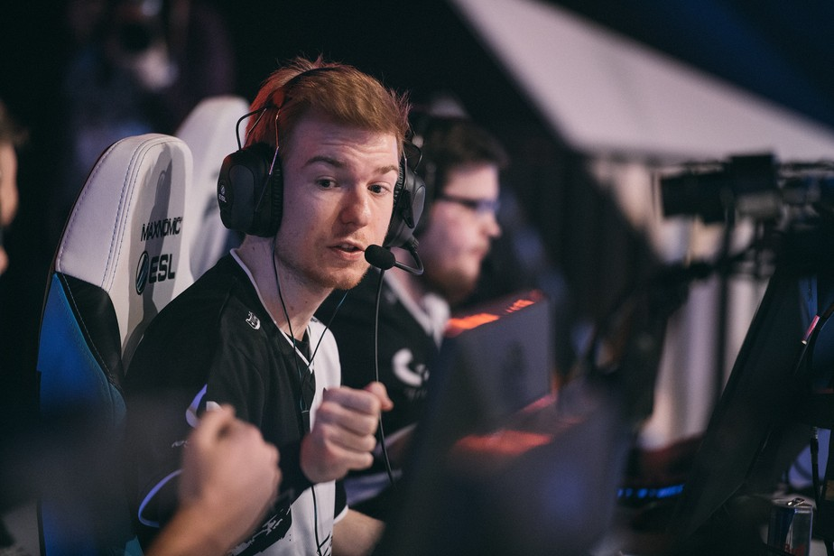

¿Qué son los e-sport?
Autor: Gustavo Gael Mayoral Palacios

Definicion:
Los e-sports son competiciones de videojuegos entre jugadores profesionales o gamers . En los últimos años han crecido de forma espectacular, llegando a convertirse en eventos muy populares. Estas competiciones no tienen nada que envidiar a las competiciones tradicionales y a día de hoy ya cuentan con todos los elementos del deporte de élite: retransmisiones en directo; comentaristas que narran los enfrentamientos y que se conocen como casters ; grandes sueldos y premios en metálico para los campeones, y estadios llenos con público que quiere ver en directo a estas estrellas de los videojuegos.